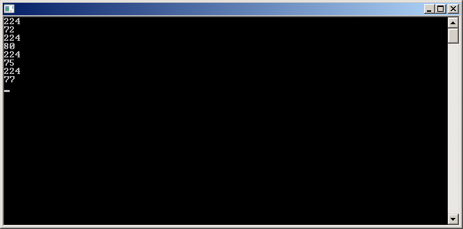

- The snake is constantly moving, one tile at a time
- The snake cannot travel backwards directly into itself, thus ending the game (it can however, make two 90 degree turns to move backwards).
So that we do not need to remember the actual values when writing comparisons, and can instead write:int UP = 0; int DOWN = 1; int LEFT = 2; int RIGHT = 3;
When checking the input. (But also, there's a better way to do this, involving modulus math, and only a single conditional statement, instead of 4, but that wouldn't make this a simple guide if I had to explain it.)if (Direction == UP and InputDirection != DOWN){ Direction = InputDirection; }
Anyways, onto the basics of getting keyboard input. One of the easiest ways to do so, would be to first import conio.h and use two functions kbhit() and getch().
The above code is just an infinite loop that tells you what key you've just pressed.#include <stdio.h> #include <conio.h> void main(){ while (1){ int input; if (kbhit()){ input = getch(); printf("%d\n",input); } } }

The results for pressing up, down, left, and right respectively. Notice how there is always a preceeding 224. This is special to arrow keys, and needs to be deal with.
As the arrow keys will return 72, 80, 75, and 77 for the keys up, down, left, right instead of 0, 1, 2, 3. We need to reassign the values with a simple switch case statement to make it consistent with the constants we established earlier.
int GetInput(){ int input; if (kbhit()){ input = getch(); input = getch(); //We need to do this twice, as it returns 224 the first time for arrow key inputs //left =75, up = 72,down = 80, right = 77 switch(input){ case 75: input = LEFT; break; case 77: input = RIGHT; break; case 72: input = UP; break; case 80: input = DOWN; break; } } } return input; }